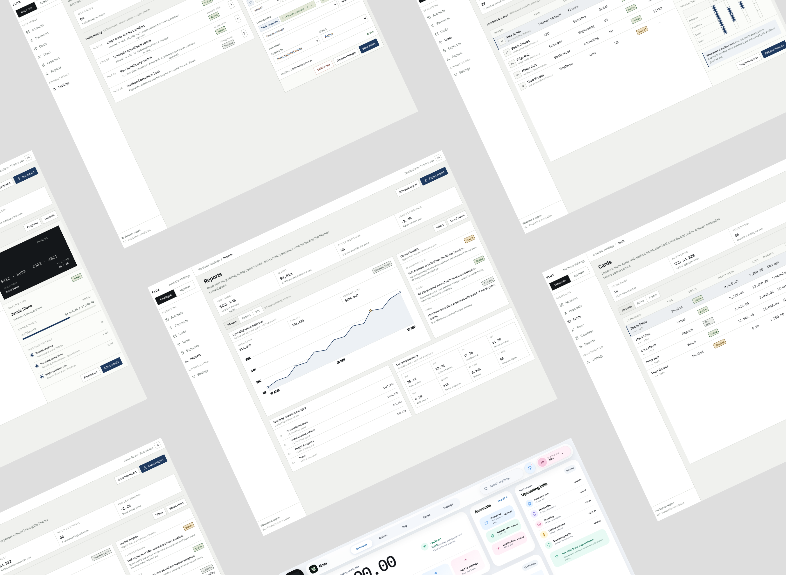

FINTECH · APPROVALS · SPEND CONTROL · AUDITABILITY
Flux
A finance operations workspace organized around one high-stakes question: how can a team move international money quickly without losing approval control or an explainable activity trail?

What I owned, chose, traded off — and what is still unknown
A recruiter-scan summary derived from the public case source. Unknowns stay explicit instead of being converted into team, stakeholder, failure or outcome claims.
Product designer · prototype author
Independent project; no separate PM, engineering or stakeholder team is documented in this public case.
NOT EXPLICIT — the case describes the solution, but the governing product or technical constraint is not isolated as a decision input.
3 documented directions/choices: Visual node-editor policy builder / Restricted accent color / Role + permission pressure
Restricted accent color — Navy and semantic statuses carry meaning without making every surface compete for attention.
Explicit trade-off section: Operational clarity beats consumer-fintech decoration
Implementation reality: Independent concept + working prototype. No verified engineering-collaboration record is present in this public case.
Local component, state or system implications are documented in the case; downstream production impact is not measured.
NOT AVAILABLE — no verified failure, rejected release or project pivot is documented in this public case.
PLANNED / NOT MEASURED. Baseline: Needs first operations benchmark.
Run the first benchmark against the predefined A26 target; if the threshold is missed, revise the selected model before adding more polish or scope.
Three things a reviewer should not have to infer
Approval chains are not useful if the decision trail disappears between tools
The project context frames the highest-value task around Finance Managers and CFOs managing international payments. The core friction is a disconnected approval chain with weak visibility into who needs to act, which rule triggered the review and what happened after approval.
Flux is an independent product concept. The finance roles, workflow and benchmarks are design inputs from the project context, not interview findings. No customer adoption, transaction volume, time saving or conversion outcome is claimed.
Make the control chain visible before asking for action
An employee creates a payment with amount, currency and beneficiary context.
The system exposes why approval is required instead of presenting a generic pending state.
Finance Manager and CFO decisions stay attached to the payment record.
Completion, failure or rejection remains inspectable after the action leaves the queue.
A treasury product needs more than a happy-path dashboard
The IA spans accounts, payments, cards, team permissions, expenses, reports and approval policies. The prototype deliberately treats state as product structure: draft, needs approval, partially approved, rejected, expired, processing, completed, failed and permission denied.
Operational clarity beats consumer-fintech decoration
Supports comparison and audit work better than a loose grid of rounded cards.
Adds interaction complexity to rules that can remain explicit and editable as IF / THEN logic.
Navy and semantic statuses carry meaning without making every surface compete for attention.
The same operation must behave differently for employee, approver and admin contexts.
The next evidence should come from finance operators, not another visual pass
No interview transcripts or usability sessions are available for this concept, so the portfolio does not convert benchmark assumptions into “user insights.” A useful next round would test the approval queue and policy builder with people who routinely approve business payments.
Can the reviewer identify the triggering rule and next approver without coaching?
Can evidence, consequence and action be understood in one review context?
Can an admin predict which payments a threshold change will affect?
Capture misunderstandings, backtracking and missing evidence before measuring speed.
This protocol is the next evidence to earn; it is not presented as completed research.
Success criteria before success claims
≥ 4/5 participants correctly explain route status and recover a failed settlement path. This is a decision threshold for future validation, not a measured outcome.